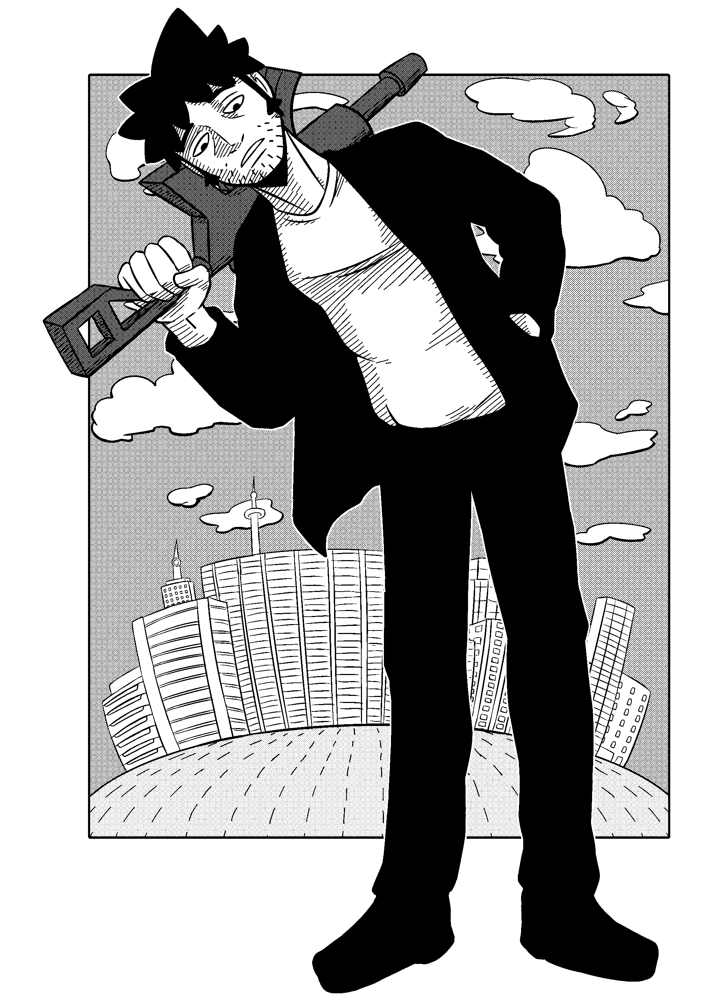

Tom
Tom ist einer der zwei Protagonisten in KILL CONTROL, ein jahrelang im System aktiver Attentäter. Seine kriminellen Anfänge machte er als Bankräuber.
Alter
36
Größe
1,84 m
Herkunft
Armenien
Zugehörigkeit
Sponsorsystem: Attentäter
Persönlichkeit
Tom ist ein egoistisches, lügendes und manipulatives Arschloch. Er zeigt kein Mitgefühl und nimmt keine Rücksicht auf andere, nicht mal Kinder. Sein Auftreten ist vulgär und dümmlich, doch wenn es drauf ankommt, schaltet er sein Hirn an. Er kontrolliert Lana.
Trotz allem ist er gegen Rache und bleibt cool in den meisten Situationen.
Zu seinen Vorlieben gehören Alkohol, Zigaretten und Frauen.
Motto: Vergangene Sachen sollten in der Vergangenheit ruhen.
Spirit Animal: Affe
Fähigkeiten
Stärken liegen im Nahkampf, kennt sich aber auch mit den meisten Schusswaffen aus.